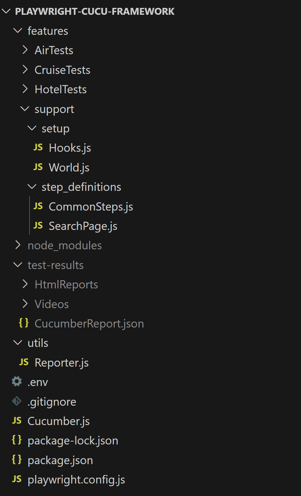

Playwright with Cucumber Framework.
npm init playwright@latest
npm install --save-dev @cucumber/cucumber
npm install --save-dev cucumber-html-reporter
Feature : Cruise Tests
@Regression @Sanity
Scenario Outline : ID-1 : Cruise only Complete Payment test with verification
Given UAT url with siid: <SIID>
When Open Browser & Launch the url
Then Validate title should be: <Title>
Examples :
| SIID | Title |
| 130386 | Odyssey UAT - USD : Cruise Planner |
| 130385 | Odyssey UAT - AUD : Cruise |
@Regression
Scenario Outline : ID-2 : Cruise Only Held Payment test with verification
Given UAT url <SIID>
When Open Browser & Launch the url
Then Validate the <Title>
Examples :
| SIID | Title |
| 130386 | Odyssey UAT - USD : Cruise Planner |
| 130385 | Odyssey UAT - AUD : Cruise Planner |
Feature : Air Tests
@Regression @Sanity
Scenario Outline : ID-3 : Air Complete Payment test with verification
Given UAT url with siid: <SIID>
When Open Browser & Launch the url
Then Validate title should be: <Title>
Examples :
| SIID | Title |
| 130386 | Odyssey UAT - USD : Cruise Planner |
| 130385 | Odyssey UAT - AUD : Cruise |
@Regression
Scenario Outline : ID-4 : Air Held Payment test with verification
Given UAT url <SIID>
When Open Browser & Launch the url
Then Validate the <Title>
Examples :
| SIID | Title |
| 130386 | Odyssey UAT - USD : Cruise Planner |
| 130385 | Odyssey UAT - AUD : Cruise Planner |
const { expect } = require ( "@playwright/test" ) ;
const { Given, When, Then } = require ( "@cucumber/cucumber" ) ;
Given ( / U A T u r l w i t h s i i d : ( .* ) / , async function ( siid ) {
this . url = process . env . Cruise + siid ;
console . log ( this . getDate ( "yyyy-MM-dd_HH-mm-ss" ) ) ;
} ) ;
When ( "Open Browser & Launch the url" , async function ( ) {
await this . page . goto ( this . url ) ;
} ) ;
Then ( / V a l i d a t e t i t l e s h o u l d b e : ( .* ) / , async function ( title ) {
await expect ( this . page ) . toHaveTitle ( title ) ;
} ) ;
6. Create Cucumber.js file
require ( 'dotnet' ) . config ( )
module . exports = {
default : {
require : [ ] ,
tags : process . env . Tags ,
format : [ "json:test-results/CucumberReport.json" ] ,
parallel : 2 ,
retry : 1 ,
defaultTimeout : 60000 ,
dryRun : false
} ,
worldParameters : {
}
}
7. Create Reporter.js file
const reporter = require ( "cucumber-html-reporter" ) ;
const { format } = require ( "date-fns" ) ;
const today = format ( new Date ( ) , "yyyy-MM-dd_HH-mm-ss" ) ;
reporter . generate ( {
theme : "bootstrap" ,
jsonFile : "test-results/CucumberReport.json" ,
output : `test-results/HtmlReports/CucumberReport${ today } ,
launchReport : true ,
ignoreBadJsonFile : true ,
reportSuiteAsScenarios : true ,
scenarioTimestamp : true ,
storeScreenshots : false ,
noInlineScreenshots : false ,
screenshotsDirectory : 'test-results/Screenshots/' ,
brandTitle : "Automation Report" ,
name : "Cruise tests" ,
metadata : {
"App Version" : process . env . App_Version ,
"Test Environment" : process . env . Test_Environment ,
"Browser" : process . env . Browser ,
"Platform" : process . env . Platform ,
}
} ) ;
const { chromium, firefox, webkit} = require ( "playwright" ) ;
const { Before, After, BeforeAll, AfterAll, BeforeStep, AfterStep, setDefaultTimeout } = require ( '@cucumber/cucumber' ) ;
require ( "dotenv" ) . config ( ) ;
setDefaultTimeout ( 60000 ) ;
BeforeAll ( async function ( ) { } ) ;
AfterAll ( async function ( ) { } ) ;
Before ( async function ( ) {
if ( process . env . Browser . toLowerCase ( ) === 'chromium' )
this . browser = await chromium . launch ( { headless : process . env . Execute_In_Headless } ) ;
else if ( process . env . Browser . toLowerCase ( ) === 'chrome' )
this . browser = await chromium . launch ( { headless : process . env . Execute_In_Headless , channel : "chrome" } ) ;
else if ( process . env . Browser . toLowerCase ( ) === 'edge' )
this . browser = await chromium . launch ( { headless : process . env . Execute_In_Headless , channel : "msedge" } ) ;
else if ( process . env . Browser . toLowerCase ( ) === 'firefox' )
this . browser = await firefox . launch ( { headless : process . env . Execute_In_Headless } ) ;
else if ( process . env . Browser . toLowerCase ( ) === 'webkit' )
this . browser = await webkit . launch ( { headless : process . env . Execute_In_Headless } ) ;
this . context = await this . browser . newContext ( {
viewport : { width : 1707 , height : 960 } ,
acceptDownloads : true ,
screenshot : 'on' ,
video : 'off' ,
recordVideo : {
dir : "test-results/Videos/" ,
size : { width : 1707 , height : 960 }
}
} ) ;
this . page = await this . context . newPage ( ) ;
this . page . setDefaultTimeout ( 60000 ) ;
this . page . setDefaultNavigationTimeout ( 60000 ) ;
this . startTime = new Date ( ) . getTime ( ) ;
} ) ;
After ( async function ( scenario ) {
const endTime = new Date ( ) . getTime ( ) ;
const elapsedTime = endTime - this . startTime ;
const timeTaken = this . convertToMinAndSec ( elapsedTime ) ;
if ( scenario . result . status === "FAILED" ) {
this . page . waitForTimeout ( 5000 ) ;
this . attach ( await this . page . screenshot ( { encoding : 'base64' } ) , "image/png" ) ;
}
this . attach ( `Execution time taken: ${ timeTaken . minutes } ${ timeTaken . seconds } ${ timeTaken . milliSeconds } ) ;
this . browser ?. close ( ) ;
this . context ?. close ( ) ;
this . page ?. close ( ) ;
} ) ;
BeforeStep ( async function ( ) { } ) ;
AfterStep ( async function ( ) { } ) ;
const { setWorldConstructor } = require ( "@cucumber/cucumber" ) ;
const { format } = require ( "date-fns" ) ;
class CustomWorld {
constructor ( ) {
this . getDate = function ( dateFormat ) {
return format ( new Date ( ) , dateFormat ) ;
} ;
this . convertToMinAndSec = function ( milliSecond ) {
const minutes = Math . floor ( milliSecond / 60000 ) ;
const seconds = Math . floor ( milliSecond % 60000 ) / 1000 ;
const milliSeconds = milliSecond % 1000 ;
return { minutes, seconds, milliSeconds } ;
} ;
this . normalizeSpace = function ( text ) {
return text . replace ( / \s { 2 , } / g, " " ) . trim ( ) ;
} ;
}
}
setWorldConstructor ( CustomWorld ) ;
